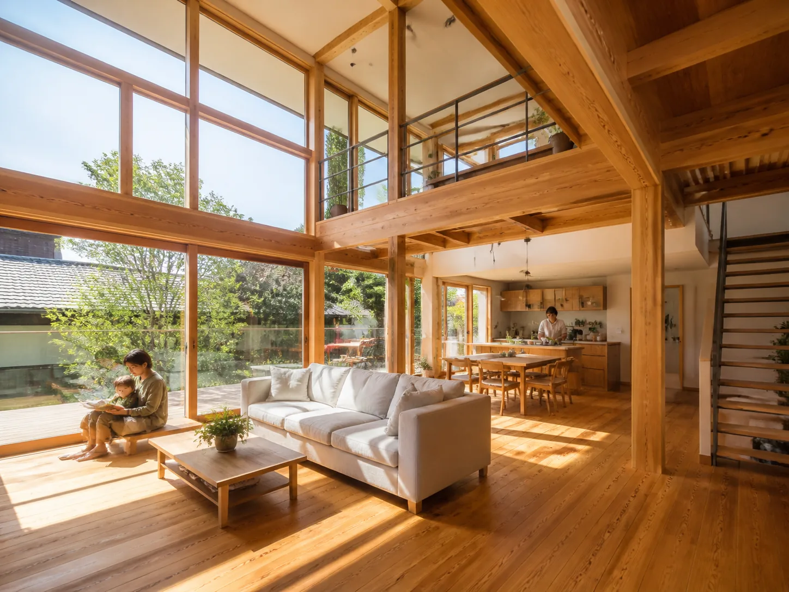

新築 / WORKS 02
光を取り込む、大きな窓の家

CONCEPT
一日中、光が主役になる家
共働きのご夫婦から「帰宅後も明るく開放的なリビングで過ごしたい」というご要望をいただき、南面いっぱいに縦格子付きの大開口を設計。木格子が直射日光を和らげ、まぶしさを抑えながら柔らかな採光を実現しました。
| 所在地 | 架空県つむぎ市 |
|---|---|
| 家族構成 | ご夫婦 |
| 延床面積 | 105.8㎡(約32坪) |
| 構造 | 木造軸組工法 2階建て |
| 工期 | 約6ヶ月 |
| 使用素材 | 国産檜柱 / 大判ガラスサッシ |
GALLERY
施工ギャラリー


RELATED